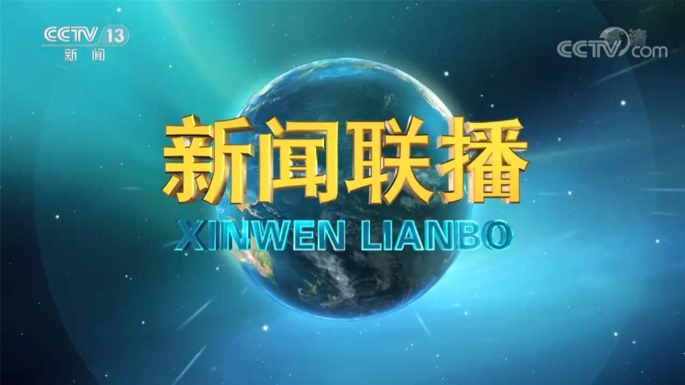
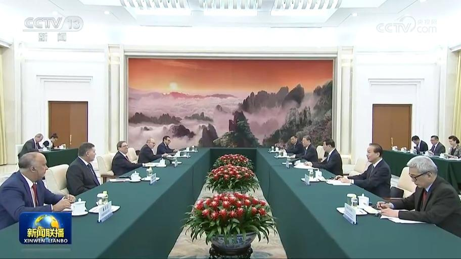
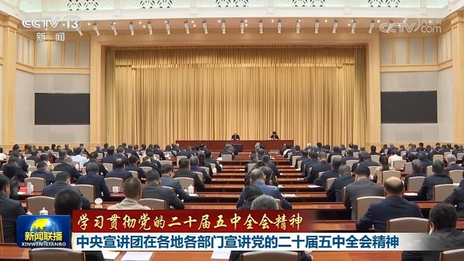
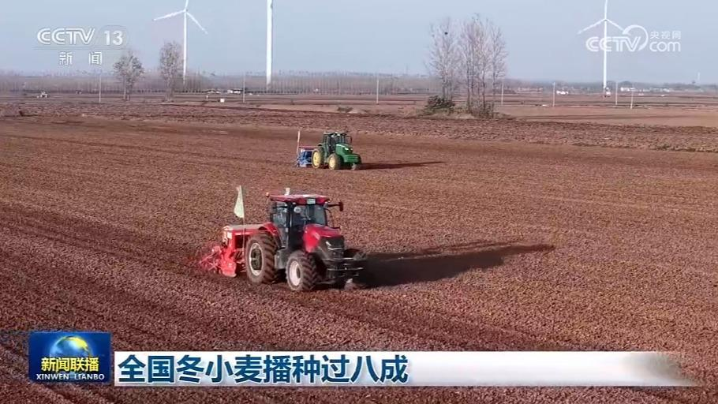
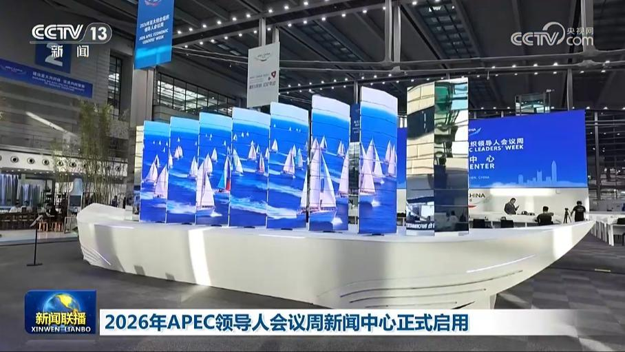
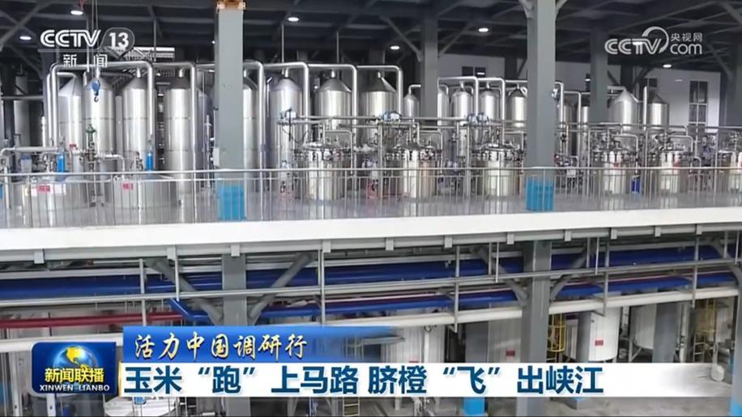
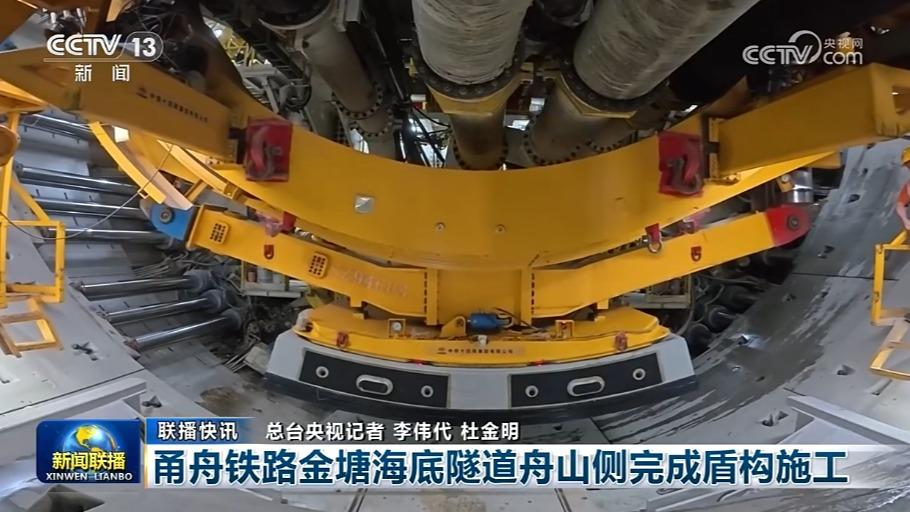
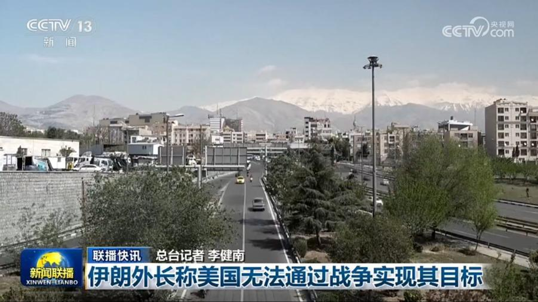

01
【建设亚太共同体 促进共同繁荣】共建普惠包容的开放型亚太经济
习近平主席在亚太经合组织第三十二次领导人非正式会议上指出，我们要坚守亚太经合组织促进经济增长、增进人民福祉的初衷，坚持在开放发展中分享机遇、实现共赢，推进普惠包容的经济全球化，构建亚太共同体。

习近平主席在亚太经合组织第三十二次领导人非正式会议上指出，我们要坚守亚太经合组织促进经济增长、增进人民福祉的初衷，坚持在开放发展中分享机遇、实现共赢，推进普惠包容的经济全球化，构建亚太共同体。
应泰国总理阿努廷邀请，国务院总理李强将于11月13日至15日对泰国进行正式访问。

中共中央政治局常委、全国政协主席王沪宁11日在京会见古巴党和政府特使、古共中央政治局委员、外交部长罗德里格斯。

连日来，学习贯彻党的二十届五中全会精神中央宣讲团成员在各地各部门宣讲，并深入基层，与干部群众互动交流。

当前，我国粮食主产区正抢抓农时，加紧推进秋冬种。农业农村部最新农情调度显示，冬小麦播种过八成。
记者从国家发展改革委了解到，目前，我国人工智能发展速度、应用规模全球领先，在塑造经济发展新动能、增进民生福祉、提升政府治理水平方面取得积极成效。“十五五”时期，我国将以落地应用牵引技术创新，协同发力，深化拓展“人工智能+”行动。具体包括：组织“人工智能+”应用攻关，优先聚焦矿山开采、高空作业、应急救灾等“险、脏、累、繁、难”场景，通过人工智能解决行业痛点问题。……
中国汽车工业协会今天（11月11日）发布的最新数据显示，10月份，我国汽车产销量双双超过300万辆，比上月呈现一定幅度的增长，其中，新能源汽车市场销量占比持续走高。
各地精准发力，推出一系列新举措，培育新场景、新业态，持续激发消费活力。这段时间，在上海，一批全球新品、首店首展集中亮相。在武康路、安福路所在的历史文化风貌区，百年老建筑限时开出快闪空间，一批新品首发、手工工坊，吸引了大批市民游客。瞄准首店经济，湖南长沙芙蓉区的五一商圈持续推动首店落地、首秀发布、首展引流。这家商场开业两个多月，已引入60多家全国及区域首店，客流超500万人次。……

今天（11月11日），2026年APEC领导人会议周新闻中心在深圳启用并投入运行。总面积1.5万平方米的新闻中心将为近5000名中外注册记者提供新闻服务保障。

从黑土地上的玉米车间到三峡库区的脐橙园，科技正在重新定义农产品的价值。一粒玉米的身价能翻多少倍？一颗橙子如何插上翅膀？记者走进两地车间与山野，找寻答案。

市场监管总局批准发布一批国家标准
在《联合国气候变化框架公约》第三十一次缔约方大会“中国角”举行的主题边会期间，多位国际组织官员高度评价中国在能源转型、绿色发展等领域取得的显著成就。
今天（11月11日），围绕乌克兰问题的俄罗斯、乌克兰、美国三方谈判进入第二天。

伊朗外长称美国无法通过战争实现其目标